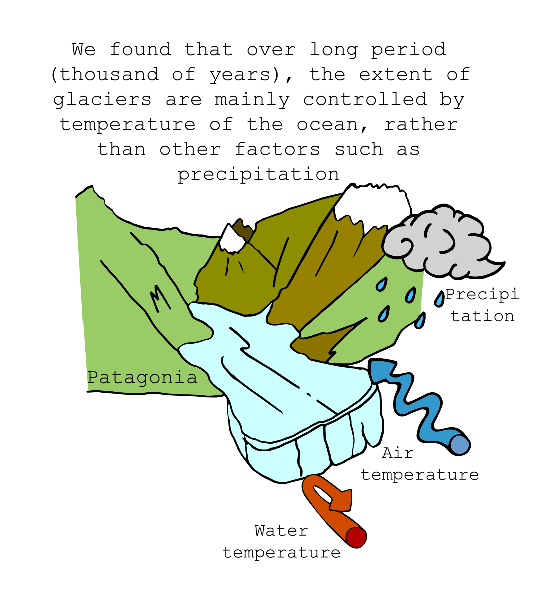
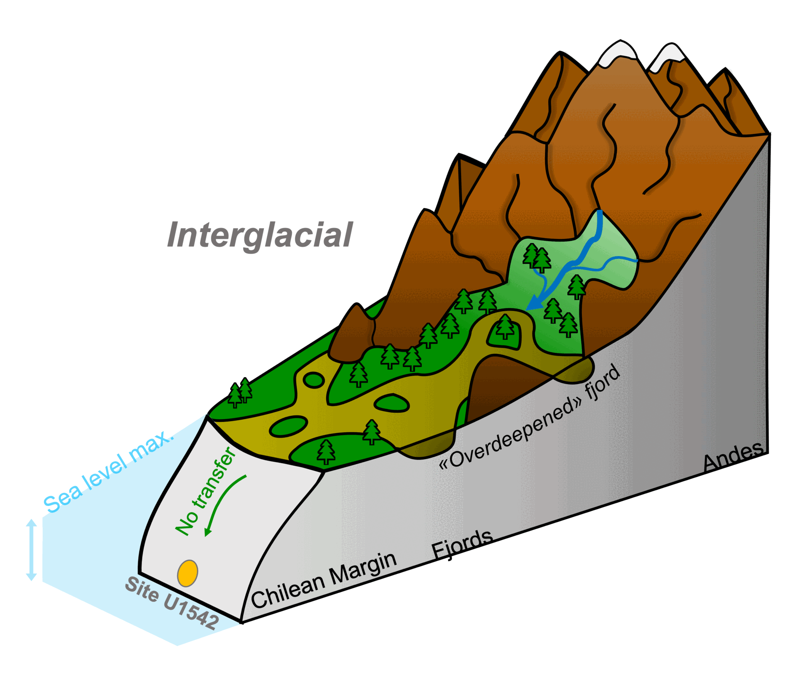
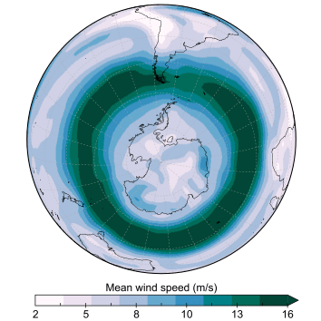
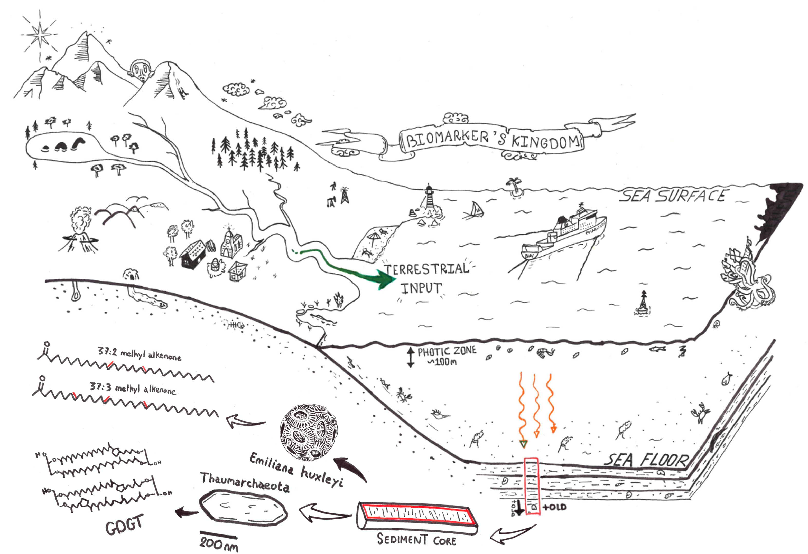

Current and past research
Southern mid-latitude ice-sheets reconstruction
Patagonia across eight glacial cycles

Using our favorite sediment archive (U1542), we have monitored the waxing and waning of the Patagonian Ice Sheet across eight glacial cycles (broadly 800,000 years).
We found that, over long period of time, glacier extent is primarily controlled by ocean temperature, rather than other factor such as insolation or precipitation. This is an important finding, as the Patagonian Ice Sheet acts as a “dust machine,” delivering vital nutrients to the Southern Ocean, boosting primary productivity during colder periods!
The paper, published in the journal Communications Earth & Environment, available here!
Southern Alps and bipolar seesaw
The concept of ‘bipolar seesaw’ describes the antiphasing of Greenland and Antarctic temperature changes during with millennial-scale climatic oscillations of the last glacial period, caused by sudden changes in the Thermohaline Circulation affecting south - northward heat transport.
We found that Mid-latitude ice sheets stand apart from the polar ice sheets in terms of the timing of when and how they waxed and waned. We have shown that the seesaw disappeared during Heinrich Stadials, short intervals of intense cooling that occurred during the last glacial period. The New Zealand glaciers retreated within about a thousand years of mid-latitude ice sheets in North America and Eurasia. This geologically rapid interhemispheric connection is suggested to be mediated by icebergs bringing fresh water into the North Atlantic, which slowed down the Atlantic overturning circulation, allowing heat to build up in the Southern Ocean. The synchroneity shows just how quickly events in one region can propagate through the broader climate system.
The paper is available here! You can also find a french press release here and a german/english here

Southern Ocean paleoceanography

Biomarkers to reconstruct the past climate
Organic molecules or compounds preserved in the geological record are key for environmental investigations in different domains of the Earth Sciences, providing insights into past climate conditions.
Environmental changes influence living organisms, which may produce specific chemical compounds in response to these variations. The relationship between these compounds - called biological markers or
simply biomarkers - and environmental parameters provides an excellent tool for paleoclimate studies.

The biomarkers kingdom